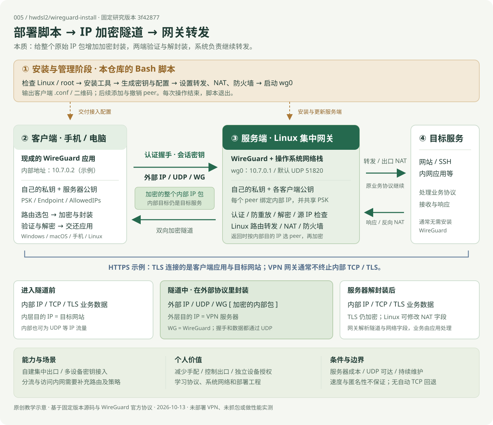

一份 Bash 脚本
安装、生成配置、登记与撤销设备。
这个库帮助你搭建自己的 VPN，并管理设备接入。它用脚本完成部署；WireGuard 负责 UDP 加密 IP 隧道，Linux 网络栈负责路由、转发和 NAT。
安装、生成配置、登记与撤销设备。
认证、握手、加解密和密钥更新。
虚拟网卡、路由、DNS、转发与 NAT。
从脚本的部署能力，到两端的运行职责，再到封装、转发与价值。图中采用默认集中出口和 TCP / HTTPS 示例。

自动部署 WireGuard，生成并管理每台设备的接入配置。
整个内部 IP 包加密后，封装进外层 UDP；对端验证、解封装，再交给系统转发。
两端都是 WireGuard peer；客户端接入，服务器在这套拓扑中承担集中网关。
自己掌握出口与设备授权，并把网络协议和部署工程变成可研究的实践。
这是可以直接运行的 Bash 安装管理脚本。它连接已有组件，提供从安装到设备撤销的操作入口。
检查 Linux 环境，安装软件，设置网络转发、防火墙与开机启动。支持默认自动安装和交互式配置。
生成独立密钥、内部 IP、配置文件和二维码，供现成的 WireGuard 客户端导入。
添加、列出、删除客户端，重新显示二维码；添加与撤销会更新运行状态和配置。
自定义地址、UDP 端口和 DNS；具备条件时配置 IPv6，调整系统网络参数，提供卸载。
“列出客户端”展示已登记的配置身份。判断设备是否在通信，还要看最近握手和收发计数。
把安装器直接提供的功能与 WireGuard、操作系统的能力分别理解，才能判断还需要做多少工程。
| 能力 | 由谁提供 | 具体覆盖范围 |
|---|---|---|
| 安装与服务管理 | 本仓库脚本 | 环境检查、安装、配置 wg0、开机启动、卸载；主要针对受支持的 Linux 主机。 |
| 多设备接入 | 脚本 + WireGuard peer | 独立密钥和内部地址、配置文件、二维码；默认地址池能配置 253 个身份，容量需另测。 |
| 加密认证与传输 | WireGuard | 双向认证、握手、会话密钥、认证加密、防重放、密钥更新和 endpoint 漫游。 |
| 转发、出口与解析器设置 | 操作系统；脚本协助配置 | IP 转发、NAT、防火墙、路由；DNS 地址写入客户端配置，安装器未部署独立 DNS 服务。 |
| IPv6 与网络参数 | 脚本按环境配置 | 检测服务器公网 IPv6 条件，补充双栈配置；调整 sysctl / 条件启用 BBR，效果未实测。 |
| 内网、分流与访问策略 | 需要自行设计 | 可基于 WireGuard 和系统网络实现；还要维护路由、返回路径、防火墙及设备配置。 |
协议中的双方都是 peer，具备收发和加解密能力。本项目按部署角色，把一台 Linux 主机作为集中网关。
Windows · macOS · iOS · Android · Linux
Ubuntu · Debian · Rocky Linux 等
客户端保存 自己的私钥 + 服务器公钥。服务器保存 自己的私钥 + 各客户端公钥。脚本另为每台设备生成一份共享密钥 PSK。
长久身份密钥用于握手，会话收发密钥由握手派生。客户端应用与协议实现来自 WireGuard 的现有发行渠道。
| 字段 | 客户端 | 服务端 |
|---|---|---|
PrivateKey / PublicKey | 自己的私钥、服务器公钥。 | 自己的私钥、每个客户端的公钥。 |
Address | 例如 10.7.0.2，赋给本机虚拟接口。 | 默认 10.7.0.1，赋给 wg0。 |
Endpoint / ListenPort | Endpoint 指向服务器可达地址和 UDP 端口。 | ListenPort 默认 51820；从认证包学习客户端当前外部位置。 |
AllowedIPs | 默认 0.0.0.0/0、::/0；配合平台路由把流量交给服务器 peer。 | 给该 peer 绑定一个内部 /32 地址，双栈时加 /128；检查来包内部源 IP。 |
PresharedKey | 与该服务器 peer 共享的 PSK。 | 与该客户端共享同一 PSK，混入握手派生。 |
DNS / Keepalive | 配置解析器；脚本设置 PersistentKeepalive = 25 秒。 | 生成客户端字段；保活帮助维持 NAT 映射，可达性仍依赖实际网络。 |
脚本在服务端生成客户端私钥，并保存导出的配置；二维码同样包含接入凭据。每台设备使用独立配置，才能单独撤销。目标网站通常无需安装 WireGuard。
准备一台服务器；脚本完成系统配置，再把接入材料交给设备。
受支持的 Linux、root 权限及适用内核。本版本安装器拒绝容器；协议本身的容器能力需另行理解。
客户端能够访问服务器 UDP 端口。公网地址、云安全组、上游 NAT 映射由实际部署环境决定。
安装对应平台 WireGuard 应用或工具，导入配置；需要保管自己的接入凭据。
检查系统、内核和管理员权限，安装 WireGuard 与辅助工具。
生成服务器密钥，写入内部地址与 UDP 监听端口。
设置 IP 转发、NAT 与防火墙，让服务器能够转发客户端流量。
生成客户端密钥与内部 IP，输出配置文件和二维码。
启动 wg0 并设置开机启动；设备导入配置后建立隧道。
持续处理流量的是 WireGuard 和系统网络栈。云安全组、上游防火墙或 NAT 端口转发，需要在对应环境中配置。
后续添加设备时，脚本更新配置并将 peer 加到运行中的接口；撤销时移除运行状态中的 peer、持久配置及导出文件。公开实现采用局部更新，实际连接影响仍待测试。公网 IP 检测只帮助确定地址，不会创建上游端口映射。
以设备访问网站为例。点击步骤，理解每一段发生了什么。
应用生成 IP 包，操作系统按路由把需要经过 VPN 的流量交给 WireGuard 虚拟接口。
默认全流量配置：AllowedIPs = 0.0.0.0/0, ::/0有有效会话时直接使用现有会话密钥；不为每个数据包重新握手。AllowedIPs 将 peer 与内部 IP 绑定，承担发送选择和接收源 IP 检查。
我们的理解可以表述为：原始 IP 包经过认证加密，被包装在另一套外层 IP / UDP 协议里传输；对端验证、解封装，再交给系统继续处理。
包装整个内部 IP 包。TCP、UDP、TLS 和业务内容已经在这个 IP 包里面。外层目的地址指向 VPN 服务器；内部目的地址仍指向原来的目标服务。
内部 IP / TCP / TLS 数据应用与网站使用自己的业务协议。
外部 IP / UDP / WireGuard└ 加密的 [内部 IP / TCP / TLS]认证加密保护整个内部 IP 包。
内部 IP / TCP / TLS 数据TLS 仍加密；NAT 可改写 IP 和端口。
每一层读取的字段和承担的责任不同。能处理隧道包，并不意味着网关已读懂或解密业务内容。
| 处理层次 | 由谁执行 | 实际发生的事 |
|---|---|---|
| 隧道处理 | 两端 WireGuard | 读取 WG 消息，验证身份与完整性、防重放、解密，检查该 peer 的内部源 IP。 |
| 网络转发 | 服务端 Linux 网络栈 | 查看内部 IP 目标，应用路由与防火墙；出口 NAT 可改写源 IP / 端口，并维护返回映射。 |
| 业务处理 | 客户端应用与目标服务 | 处理 TLS、HTTP、SSH、DNS 等应用协议；正常 HTTPS 情形中，VPN 网关不持有网站 TLS 会话密钥。 |
对端由配置公钥标识，外部 endpoint 用于 UDP 寻址，握手派生的会话密钥保护内部 IP 包。
内部 TCP 继续维持自身连接、排序和重传；服务器作为网关，通常不终止内部 TCP 或 TLS 连接。
| 方式 | 主要处理对象 | 对这份研究的意义 |
|---|---|---|
| WireGuard IP 隧道 | 操作系统送入虚拟接口的 IP 包。 | 经路由选中的应用无需逐个理解 WG 协议；是否走 VPN 由路由与平台配置决定。 |
| HTTP / SOCKS 代理 | 按代理协议接收请求或转接应用连接。 | 常需要应用代理设置或转接层；代理可能终止传输连接，HTTPS 是否被终止取决于具体模式。 |
| 二层桥接 | 以太网帧与二层网络行为。 | WG 是三层 IP 隧道，安装成功不会自动形成一个支持以太网广播发现的局域网。 |
| 自动协调与中继平台 | 设备发现、网络穿透协调、路径选择等。 | 本安装器提供集中网关配置，未提供相应协调、中继或自动网状组网服务。 |
隧道、peer 和路由依据：官方概念说明、技术白皮书。业务连接与 NAT 的说明是据封装层次所作的工程解释，本次未抓包验证。
传输协议和业务协议处在不同层。隧道同时负责加密与认证。
以使用 TCP 的 HTTPS 请求为例：内部 TCP 负责自身的排序与重传，外层 WireGuard 始终通过 UDP 发送。
握手与数据消息都走 UDP，默认端口 51820。这个安装器没有提供 TCP 自动回退。
可以承载内部 TCP、UDP 等 IP 流量；应用仍使用自己的协议。
服务器解开 WireGuard 封装时，内部 HTTPS 的 TLS 加密仍然存在。
配置中的身份密钥用于认证；握手派生的会话密钥用于业务数据保护。
| 机制 | 使用的设计 | 实际作用 |
|---|---|---|
| 认证与协商 | Noise 握手 · Curve25519 | 验证配置中的对端身份，协商密钥材料。 |
| 数据加密 | ChaCha20-Poly1305 | 保护内部 IP 包内容，并检测篡改。 |
| 额外共享秘密 | 每客户端一份 PSK | 脚本生成额外共享密钥，混入握手过程。 |
| 防重放与更新 | 时间戳 · 计数器 · 协议定时器 | 抵御旧包重放，轮换会话密钥，提供前向保密。 |
握手采用 Noise IK 系列设计，密钥派生使用 BLAKE2s / HKDF。稳定公钥标识设备，会话密钥负责实际数据加密；身份公钥不直接逐包加密业务。已认证数据可更新对端 endpoint，帮助适应网络位置变化；保活帮助维持 NAT 状态，但不会让不可达的服务器自动变得可达。
| 观察位置 | 可观察内容 | 加密边界 |
|---|---|---|
| 设备到服务器的链路 | 外部 IP、UDP 端口、包长和时序等。 | 内部 IP 包在 WG 认证加密范围内；这些外部元数据仍可观察。 |
| VPN 服务器 | 解封装后的内部 IP、传输层字段，以及未做应用加密的内容。 | 普通 DNS 等明文业务可能被读取；正常 HTTPS 内容仍由 TLS 保护。 |
| 服务器到目标的链路 | 业务流量的网络字段；明文内容取决于业务协议。 | 离开 VPN 服务器后已无这条 WG 隧道保护，HTTPS / SSH 等应用加密继续存在。 |
| 目标网站或服务 | 应用请求、登录身份等；默认出口 NAT 场景下通常看到服务器出口 IP。 | 更换出口 IP 不会消除账号、Cookie 或设备指纹等识别方式。 |
密码学与 UDP 传输依据：官方协议。可见范围按默认出口拓扑及封装层次说明；未实测 DNS 泄漏、平台断线阻断或流量识别。
以下是基于源码能力和网络结构推导的用途，不代表已完成实际部署。先确定需要“统一出口”还是“只访问某个网段”。
客户端默认全流量配置，服务器解密后转发和 NAT。适合希望掌握自己的出口、给多台设备分别授权的人。
需要：可达的 UDP 服务、服务器出口带宽与流量预算；确认 DNS、IPv6 和本地网络访问行为。设备到服务器这一段由 WG 保护，降低沿途读取内部流量的机会。服务器与其后续网络仍是需要考虑的信任边界。
条件：路由实际经过 VPN；保持 HTTPS 等应用加密；断线阻断和 DNS 泄漏行为需按平台验证。服务器部署在能到达 NAS、开发机或内网应用的位置。客户端通过隧道访问这些内部地址。
需要：内网路由、返回路径或合适 NAT、访问防火墙、网段冲突处理；家庭服务器可能还需公网可达或端口映射。将客户端的 AllowedIPs 与系统路由改为目标网段，实现分流，减少无关流量绕行服务器。
需要：确定目标 IP 网段、返回路由和 DNS 策略；按域名或应用分流不能仅靠一个静态 CIDR 列表完成。独立配置身份方便添加和撤销。也可以进一步研究 peer 对 peer 或站点之间的三层路由。
需要：团队访问策略、设备隔离、分发与密钥生命周期管理；站点互联和自动 mesh 不是此脚本的开箱功能。把配置文件、接口、握手、封装和 NAT 对应起来。比较外层 UDP 与内层 TCP / UDP，再验证添加和撤销。
建议顺序：先一台设备访问目标，再加第二台设备；最后验证分流、IPv6、异常网络和性能。有可达服务器、UDP 可用、愿意维护少量设备配置，并接受经过单个网关的路径，这套安装器很实用。若需要企业身份登录、自动发现穿透、跨地域中继、复杂访问策略或高可用，需要额外系统设计。
对个人来说，它让自建 VPN 更容易；对项目研究来说，它展示了如何把协议能力落成可用的系统。
把密钥、路由、NAT、防火墙和启动管理连成可重复的流程。
自己维护服务器与配置身份，为设备独立授权和撤销。
观察协议、系统网络与部署脚本如何一起形成可用服务。
| 个人价值 | 具体收益 | 对应投入或限制 |
|---|---|---|
| 掌握自己的出口 | 选择服务器位置与服务商；默认通过该服务器访问外部网络。 | 承担主机、出口流量与可用性成本；单个网关故障会影响依赖它的通信。 |
| 更细的设备管理 | 设备独立密钥，遗失或不再使用时可移除其 peer。 | 妥善交付配置、登记设备归属；脚本不提供完整的自动轮换和自助发放系统。 |
| 保护到网关这一段 | 内部 IP 包在设备与服务器之间受到认证加密保护。 | 信任集中到服务器；保持应用加密，按平台检查 DNS、IPv6 和断线行为。 |
| 远程使用个人资源 | 在网络条件与路由允许时，访问自己的内网服务。 | 额外维护内网路由、防火墙与返回路径；处理家庭网络和网段冲突。 |
| 获得可迁移的知识 | 理解虚拟接口、密码学路由、UDP 封装、NAT、systemd 与配置持久化。 | 投入实验和排错时间；区分安装成功、隧道握手成功与业务可用。 |
以下为固定版本公开实现中未提供的完整能力；底层可扩展并不等于安装器已经实现。
未提供 Web 面板、管理 HTTP API、用户名密码、SSO / MFA、自助注册及自动配置分发。
未提供自动打洞协调、中继平台、mesh 管理、应用级 ACL 或逐设备隔离策略。
未提供完整的额度计费、集中审计、容量管理、自动故障切换与密钥生命周期平台。
无 TCP 回退或混淆；更换端口仍是 UDP。速度、匿名性、DNS 防泄漏与断线阻断均不能由安装成功推定。
性能由设备、网关 CPU、带宽、路径和丢包共同决定。增加封装会增加包大小，绕行网关也可能增加延迟；遇到特定网站可用但大包卡住时，还应检查 MTU。网络参数调整和 BBR 设置不构成全链路加速保证。
自动部署、配置生成、二维码导入材料、设备添加与撤销，以及服务端网络设置。默认是设备通过服务器上网的集中网关结构。
仅指定网段走 VPN、内网返回路由、客户端隔离、按应用授权，以及企业登录、审计与自助配置分发。公钥与内部 IP 的绑定不等于完整的访问权限系统。
脚本默认地址池可配置 253 个客户端。这是地址分配上限，不是经过测试的并发能力或性能承诺。
仍然是 WireGuard 的 UDP/443。端口变化不改变协议；安装器没有提供 TCP 回退、传输混淆或自动中继服务。
包含该设备的私钥、服务器公钥、共享密钥与连接参数，是完整的接入凭据。脚本在服务端生成并导出这些材料，由操作者交给设备。
VPN 加密覆盖设备到服务器的隧道。之后的应用内容保护取决于 HTTPS/TLS 等业务协议。实际速度取决于服务器、线路和设备；当前研究未进行吞吐或延迟测试。
安装器提供部署与 peer 管理基础。下面是我们可以继续设计的方向，当前网页仅说明方案，尚未实现这些扩展。
| 扩展方向 | 需要增加什么 | 怎样判断有价值 |
|---|---|---|
| 分流与内网接入 | 目标网段、路由与 DNS 策略、内网返回路径；站点互联需单独规划 peer 与路由。 | 目标资源能访问，其他流量按预期走本地；检查网段冲突、IPv6 和重启恢复。 |
| 按设备限制访问 | 以已认证 peer 的内部 IP 为基础，补充防火墙、资源范围和设备隔离。 | 既验证允许的访问，也验证被禁止的访问；AllowedIPs 绑定本身不等于完整 ACL。 |
| 配置分发与生命周期 | 设备登记、受控配置交付、密钥替换、丢失设备撤销、配置版本与管理员权限。 | 能单独授权和撤销，重启后保持状态；减少误发凭据、共用密钥与配置漂移。 |
| Web 管理与 API | 在安装管理能力外增加鉴权、授权、操作校验、审计与有限管理接口。 | 管理操作可追溯，权限范围明确；避免把任意系统命令执行包装成开放 API。 |
| 观测与容量管理 | 收集握手、endpoint、收发量、资源消耗和业务探测；制定告警与容量基线。 | 区分已配置、最近通信与业务可用；定位失败环节，并用实测决定扩容。 |
| 自动化与多网关 | 配置模板、重复部署与备份恢复；规划备用节点、路由选择和切换策略。 | 故障时业务能恢复；复制配置或添加第二台服务器不会自动形成高可用。 |
先验证一台服务器、一台客户端的真实通信，再做需要的分流和访问限制；有设备规模与管理需求后，再投入分发、面板、监控和冗余。逐项定义验收结果，保留配置与实测记录。
这是一份源码与协议导读。使用场景、个人价值和扩展方向为工程分析，运行效果留待实际环境验证。
部署与设备管理函数、配置字段、路由及 NAT 设置、官方 UDP 封装、握手与密码学机制。
各系统安装、真实客户端连接、抓包、DNS 与 IPv6 行为、网络切换、吞吐与延迟。